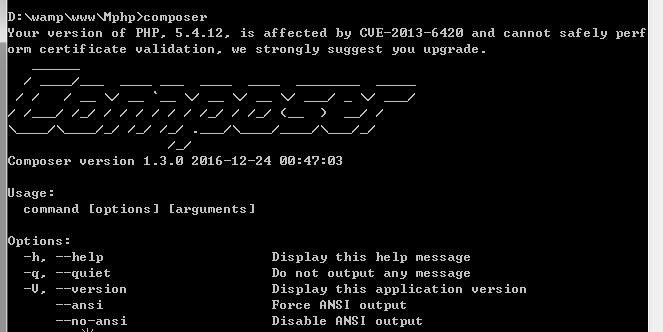
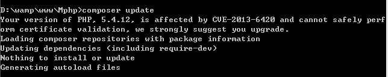

1.下载
从我的github仓库中克隆代码到本地，地址是 https://github.com/jacoobwang/vino
2.安装依赖库
因为我在框架中使用了monolog和twig两个库，因此必须先安安装它们的composer库。 首先你需要在你的本机中安装composer，可以参考 http://docs.phpcomposer.com/00-intro.html#Installation-*nix
安装好composer后，执行composer命令可以看到
我们回到项目目录，执行composer install 或 composer update，它会自动读取compser.json里的配置。等他执行完毕，可以看到它下载了依赖库。  截图显示我已经下载过了。
3.配置服务器
Nginx
需要修改配置文件(默认是nginx.conf)，修改好后需要重启nginx。如下：
location /vino/ {
try_files $uri $uri/ /vino/index.php?_url=$1&$args;
}
Apache
只需要打开rewrite_module模块。打开httpd.conf，找到LoadModule rewrite_module modules/mod_rewrite.so，去掉前面的注释，然后重启apache。
4.运行
打开浏览器，访问http://localhost/vino/，看到欢迎界面则成功。